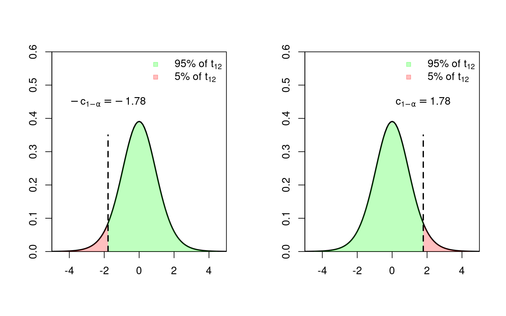
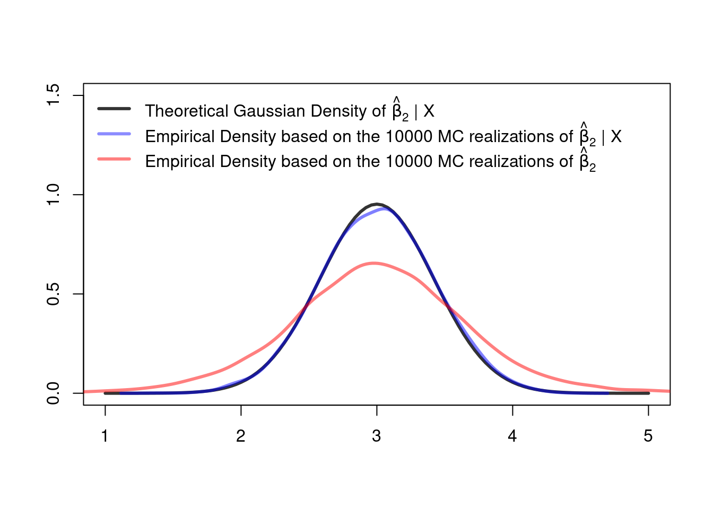

5 Small Sample Inference
The content of this chapter is very much inspired by the textbook of Hayashi (2000).
It’s is very hard to say when a sample size \(n\) is small. Often people say something like \(n<30\) means small samples and \(n\geq 30\) large samples, but this is, of course, only a very rough rule of thumb that may fail. The core issue with small sample sizes is that we cannot do inference using the central limit theorem. Thus we need rather strict assumptions on the distribution of the error term, in order to do exact inference in finite samples.
Exact inference: By “exact inference” we mean correct inference for each sample size \(n\). That is, no asymptotic \((n\to\infty)\) arguments will be used.
Assumptions: Recall that we, in general, did not impose a complete distributional assumption on \(\varepsilon\) in Assumption 4 (Chapter 3); the i.i.d. normal case in Assumption 4 was only one possible option. However, to do exact inference, the normality Assumption on the error terms is not a mere option, but a necessity. So for this chapter we assume that Assumptions 1-3 from Chapter 3 hold and that additionally the following assumption holds:
Assumption 4\(^\boldsymbol{\ast}\): Error distribution: For small sample cases, we assume that the error terms are i.i.d. normal, i.e., \(\varepsilon_i|X\overset{\operatorname{i.i.d.}}{\sim}\mathcal{N}(0,\sigma^2)\) for all \(i=1,\dots,n\) which leads to Gaussian spherical errors. That is, \[ \varepsilon|X\sim\mathcal{N}\left(0,\sigma^2I_n\right), \] where \(\varepsilon=(\varepsilon_1,\dots,\varepsilon_n)'\).
Theorem 5.1 (Normality of \(\hat\beta\)) Under Assumptions 1-4\(^\ast\) we have that \[ \hat\beta_n|X \sim \mathcal{N}\left(\beta,Var(\hat\beta_n|X)\right), \tag{5.1}\] where \(Var(\hat\beta_n|X)=\sigma^2(X'X)^{-1}\).
This result follows from noting that \(\hat\beta_n=(X'X)^{-1}X'Y=\beta+(X'X)^{-1}X'\varepsilon\) and because \((X'X)^{-1}X'\varepsilon\) is just a linear combination of the normally distributed error terms \(\varepsilon\) which, therefore, is again normally distributed, conditionally on \(X\). Note that the specific normal distribution depends on the observed realization of \(X\).
Remark: The subscript \(n\) in \(\hat\beta_n\) is here only to emphasize that the distribution of \(\hat\beta_n\) depends on \(n\); we will, however, often simply write \(\hat\beta\).
5.1 Hypothesis Tests about Multiple Parameters (F-Tests)
Let us consider the following system of \(q\)-many null hypotheses: \[\begin{align*} H_0: \underset{(q\times K)}{R}\underset{(K\times 1)}{\beta} - \underset{(q\times 1)}{r} = \underset{(q\times 1)}{0}, \end{align*}\] where the \((q \times K)\) matrix \(R\) and the \(q\)-vector \(r=(r_{1},\dots,r_{q})'\) are chosen by the statistician to specify her/his null hypothesis about the unknown true parameter vector \(\beta\). To make sure that there are no redundant equations, it is required that \(\operatorname{rank}(R)=q\).
We must also specify the alternative against which we are testing the null hypothesis, for instance \[\begin{equation*} H_A: R\beta -r \neq 0 \end{equation*}\]
The above multiple parameter hypotheses cover also the special case of single parameter hypothesis; for instance, by setting \(R=(0,1,0\dots,0)\) and \(r=0\) one get’s \[\begin{equation*} \begin{array}{ll} H_0: & \beta_{k}=0 \\ H_A: & \beta_{k} \ne 0 \\ \end{array} \end{equation*}\]
Under our assumptions (Assumptions 1 to 4\(^\ast\)), we have that \[ \begin{align*} (R\hat\beta_n-r)|X&\sim\mathcal{N}\left(R\beta -r,RVar(\hat\beta_n|X)R'\right)\\ (R\hat\beta_n-r)|X&\overset{H_0}{\sim}\mathcal{N}\left(0,RVar(\hat\beta_n|X)R'\right) \end{align*} \]
That is,
- the realizations of \((R\hat\beta_n -r)|X\) will scatter around the unknown \((R\beta -r)\) in a Gaussian fashion.
- if the null hypothesis is correct (i.e., \((R\beta-r)=0\)), the realizations of \((R\hat\beta_n-r)|X\) scatter around the \((q\times 1)\) vector \(0\).
We use a test statistic to detect a systematic location shift away from the zero vector.
5.1.1 The Test Statistic and its Null Distribution
The fact that \((R\hat\beta_n-r)\in\mathbb{R}^q\) is a \(q\)-dimensional random variable makes it a little bothersome to use as a test-statistic. Fortunately, we can turn \((R\hat\beta_n-r)\) into a scalar-valued test statistic using the following quadratic form: \[ W=\underbrace{(R\hat\beta_n -r)'}_{(1\times q)}\underbrace{[RVar(\hat\beta_n|X)R']^{-1}}_{(q\times q)}\underbrace{(R\hat\beta_n -r)}_{(q\times 1)} \] Note that the test statistic \(W\) is simply measuring the distance (it’s a weighted L2-distance) between the \((q\times 1)\) vectors \(R\hat\beta_n\) and \(r\).
Under the null hypothesis (i.e., if \(H_0\) is true), \(W|X\) is a sum of \(q\)-many independent squared standard normal random variables. Therefore, under the null hypothesis, \(W|X\) is chi-square distributed with \(q\) degrees of freedom (see Section 2.2.10.3), \[ \begin{align*} W|X&\overset{H_0}{\sim} \chi^2_{(q)}\\ \Rightarrow \quad\quad W&\overset{H_0}{\sim} \chi^2_{(q)} \end{align*} \] Note that the distribution of \(W|X\) does not depend on \(X,\) (i.e. it’s a \(\chi^2_{(q)}\)-distribution no matter the realization of \(X\)) and thus our test decisions do not depend on the values of \(X.\) (Good news!)
Usually, we do not know \(Var(\hat\beta_n|X),\) and thus we need to estimate this quantity from the data. Unfortunately, in the small sample case, we can only deal with homoskedastic error terms. For truly exact finite sample inference, we need a variance estimator for which we can derive the exact small sample distribution. Therefore, we require Assumption 4\(^*\) of spherical errors (i.e., \(Var(\varepsilon|X)=I_n\sigma^2\)) which yields that \(Var(\hat\beta_n|X)=\sigma^2(X'X)^{-1}\), and where \(\sigma^2\) can be estimated by the unbiased (\(UB\)) variance estimator
\[
s_{UB}^2=(n-K)^{-1}\sum_{i=1}^n\hat\varepsilon_i^2.
\]
From the normality assumption in Assumption 4\(^*\), it follows then that \[
\frac{(n-K)}{\sigma^{2}}s_{UB}^2\sim\chi^2_{(n-K)}.
\tag{5.2}\]
The \(F\) test statistic uses then \(s_{UB}^2\) as an estimator of \(\sigma^2\) \[ F=(R\hat\beta_n -r)'[R(s_{UB}^2(X'X)^{-1})R']^{-1}(R\hat\beta_n -r)/q \] and takes into account the additional randomness (estimation errors) due to \(s_{UB}^2\), which leads to the following exact null distribution of the \(F\) test \[ F\overset{H_0}{\sim} F_{(q,n-K)}, \tag{5.3}\] where \(F_{(q,n-K)}\) denotes the \(F\)-distribution with \(q\) numerator and \(n-K\) denominator degrees of freedom.
As in the case of \(W\), the distribution of \(F\) conditional on \(X\) does not depend on \(X\); i.e. \(F|X\overset{H_0}{\sim}F_{(q,n-K)},\) but \(F_{(q,n-K)}\) does not depend on \(X,\) thus we can write \(F\overset{H_0}{\sim}F_{(q,n-K)}.\)
The distributional statements in Equation 5.2 and Equation 5.3 are a little cumbersome to derive and we do not go into details here, but in case you’re interested you can find some more details, for instance, in Chapter 1 of Hayashi (2000).
By contrast to \(W,\) \(F\) is now a practically useful test statistic, and we can use the observed value \(F_{\text{obs}}\) to measure the distance of our estimate \(R\hat\beta_n\) from its hypothetical value \(r.\)
Observed values, \(F_{\text{obs}}\), that are “unusually large” under the null hypothesis, lead to a rejection of the null hypothesis. The null distribution \(F_{(q,n-K)}\) of \(F\) is used to judge what’s “unusually large” under the null hypothesis.
The F distribution. The F distribution is a ratio of two \(\chi^2\) distributions. It has two parameters: the numerator degrees of freedom, and the denominator degrees of freedom. Each combination of the parameters yields a different F distribution. See Section 2.2.10.6 for more information on the \(F\) distribution.
5.2 Tests about One Parameter (t-Tests)
For testing a hypothesis about only one parameter \(\beta_k\), with \(k=1,\dots,K\) \[\begin{equation*} \begin{array}{ll} H_0: & \beta_k=r\\ H_A: & \beta_k\ne r\\ \end{array} \end{equation*}\] the \((q\times K)\)-matrix \(R\) becomes a \((1\times K)\) row-vector of zeros but with a one as the \(k\)th element. For instance, for testing a null hypothesis about \(\beta_k\) with, e.g., \(k=2\), we have \(R=(0,1,0,\dots,0),\) and thus the \(F\) test statistic simplifies to \[ F=\frac{\left(\hat{\beta}_k-r\right)^2}{\widehat{Var}(\hat{\beta}_k|X)}\overset{H_0}{\sim}F_{(1,n-K)}, \] where \(\widehat{Var}(\hat{\beta}_k|X)=s^2_{UB}[(X'X)^{-1}]_{kk}.\)
Taking square roots yields the \(t\) test statistic \[ t=\frac{\hat{\beta}_k-r}{\widehat{\operatorname{SE}}(\hat{\beta}_k|X)}\overset{H_0}{\sim}t_{(n-K)}, \] where \(\widehat{\operatorname{SE}}(\hat{\beta}_k|X)=s_{UB}[(X'X)^{-1/2}]_{kk},\) and where \(t_{(n-K)}\) denotes the \(t\)-distribution with \(n-K\) degrees of freedom.
Thus the \(t\)-distribution with \(n-K\) degrees of freedom is the appropriate distribution to judge whether or not an observed value \(t_{obs}\) of the test statistic is “unusually large” under the null hypothesis.
Note: All commonly used statistical software packages report \(t\)-tests testing the null hypothesis \(H_0:\beta_k=0\), i.e., with \(r=0\). This means to test the null hypothesis that \(X_k\) has “no (linear) effect” on \(Y\).
The \(t\) distribution. The following plot illustrates that as the degrees of freedom increase, the shape of the \(t\) distribution comes closer to that of a standard normal bell curve. Already for \(25\) degrees of freedom we find little difference to the standard normal density. In case of small degrees of freedom values, we find the distribution to have heavier tails than a standard normal. See Section 2.2.10.4 for more information about the \(t\)-distribution.

5.3 Testtheory
5.3.1 Significance Level \(\alpha\)
To actually test the null hypothesis (e.g., \(H_0\): \(R\beta-r=0\) or \(H_0\): \(\beta_k=0\)), we need to have a decision rule on when we will reject or not reject the null hypothesis. This amounts to deciding on a probability with which we are comfortable with committing a Type I error (\(\alpha\)-error): rejecting the null hypothesis when it is in fact true. The probability of such a Type I error shall be bounded from above by a (small) significance level \(\alpha\), that is \[ P(\text{reject } H_0| H_0\text{ is true})=P(\text{Type I Error})=\alpha \] For a given significance level (e.g., \(\alpha=0.05\)) and a given alternative hypothesis, we can divide the range of all possible values of the test statistic (i.e., \(\mathbb{R}\) since both \(t\in\mathbb{R}\) and \(F\in\mathbb{R}\)) into a rejection region and a non-rejection region by using critical values derived from the distribution of the test statistic under the null hypothesis. We can do this because the test statistics \(t\) and \(F\) have known distributions under the null hypothesis (\(t\overset{H_0}{\sim}t_{n-K}\) and \(F\overset{H_0}{\sim}F_{(q,n-K)}\)).
Indeed, under Assumption 4\(^\ast\), we know the exact null distributions for every sample size \(n\). Having decided on the rejection and non-rejection regions, we only need to check whether the observed (obs) sample values \(t_{obs}\) or \(F_{obs}\) of the test statistics \(t\) or \(F\) are either in the rejection or in the non-rejection region to either rejection the null hypothesis or not to rejection the null hypothesis.
Non-conservative versus conservative tests: Since the test statistics \(F\) and \(t\) are continuous random variables of which we know the exact distributions (under Assumptions 1-4\(^\ast\)), we can find critical values such that \[ P(\text{Type I Error})=\alpha \] We call such tests “non-conservative” since the probability of a type I error equals the significance level \(\alpha\). Test statistics with \[ P(\text{Type I Error})<\alpha \] are called conservative test statistics; they lead to valid inferences, but will detect a correct violation of the null hypothesis less often than a non-conservative test. A test statistic with \(P(\text{Type I Error})>\alpha\) leads to invalid inferences!
5.3.2 Critical Values
The \(F\)-Test
The critical value \(c_{1-\alpha}>0\) defines the
- rejection region, \(]c_{1-\alpha},\infty[\), and
- non-rejection region, \(]0,c_{1-\alpha}]\)
which together divide the range of test-statistic values (here \(\mathbb{R}^+\) since \(F\in\mathbb{R}^+\)) for a given significance level \(\alpha\in(0,1)\), such that \[ P(\text{Type I Error})=P_{H_0}\Big(F\in]c_{1-\alpha},\infty[\Big)=\alpha, \] where \(c_{1-\alpha}\) is here the \((1-\alpha)\) quantile of the \(F\)-distribution with \((q,n-K)\) degrees of freedom, and where \(P_{H_0}\) means that we compute the probability under the assumption that \(H_0\) is true.

The rejection region: The rejection region describes a range of values of the test statistic \(F\) which we rarely see if the null hypothesis is true (only in at most \(\alpha \cdot 100\%\) cases). If the observed value of the test statistic, \(F_{\text{obs}}\), falls in this region, we will reject the null hypothesis and accept Type I error rate of \(\alpha\).
The non-rejection region: The non-rejection region describes a range of values of the test statistic \(F\) which we expect to see (in \((1-\alpha) \cdot 100\%\) cases) if the null hypothesis is true. If the observed value of the test statistic, \(F_{\text{obs}}\) falls in this region, we will not reject the null hypothesis.
Caution: Not rejecting the null hypothesis does not mean that we can conclude that the null hypothesis is true. We only had no sufficiently strong evidence against the null hypothesis. A violation of the null hypothesis, for instance \(R\beta -r=a\neq 0\), may simply be too small (too small \(a\) value) to stand out from the estimation errors (measured by the standard error) in \(\hat\beta_k.\)
Fortunately, you do not need to read old-school distribution tables to find the critical value \(c_{1-\alpha}\), but can simply use R
df1 <- 9 # numerator df
df2 <- 120 # denominator df
alpha <- 0.05 # significance level
## Critical value:
crit_value <- qf(p = 1-alpha, df1 = df1, df2 = df2)
crit_value[1] 1.958763Changing the significance level from \(\alpha=0.05\) to \(\alpha=0.01\) makes the critical value \(c_{1-\alpha}\) larger and, therefore, the rejection region smaller (fewer Type I errors)
alpha <- 0.01
## Critical value:
crit_value <- qf(p = 1-alpha, df1 = df1, df2 = df2)
crit_value[1] 2.558574The \(t\)-Test
In case of the \(t\)-test, we need to differentiate between two-sided and one-sided testing.
Two-Sided \(t\)-Test
Two-sided hypothesis: \[\begin{equation*} \begin{array}{ll} H_0: & \beta_k=r \\ H_A: & \beta_k\ne r \end{array} \end{equation*}\] In case of a two-sided \(t\)-test, we reject the null hypothesis if the observed realization of the \(t\)-test, \(t_{obs}\), is “far away” from zero either by being sufficiently smaller or greater than \(r\). The corresponding two-sided critical values are denoted by \(-c_{1-\alpha/2}=c_{\alpha/2}<0\) and \(c_{1-\alpha/2}>0\), where \(c_{1-\alpha/2}>0\) is the \((1-\alpha/2)\) quantile of the \(t\)-distribution with \((n-K)\) degrees of freedom, and where \(-c_{1-\alpha/2}=c_{\alpha/2}\) due to the symmetry of the \(t\)-distribution. These critical values defines the following rejection and the non-rejection regions \[\begin{align*} \text{rejection region:}&\hspace{1cm}]-\infty,c_{\alpha/2}[\;\;\cup\;\;]c_{1-\alpha/2}, \infty[\\ \text{non-rejection region:}&\hspace{1cm}[c_{\alpha/2},c_{1-\alpha/2}]. \end{align*}\] For this rejection region it holds true that \[ P(\text{Type I Error})=P_{H_0}\Big(t\in\;]-\infty,c_{\alpha/2}[\;\;\cup\;\;]c_{1-\alpha/2}, \infty[\Big)=\alpha. \]

One-Sided \(t\)-Test
One-sided hypothesis: \[\begin{equation*} \begin{array}{lll} &H_0: & \beta_k =r\\ &H_A: & \beta_k >r\\ (\text{or}&H_A: & \beta_k< r) \end{array} \end{equation*}\] In case of a one-sided \(t\)-test, we will reject the null if \(t_{obs}\) is sufficiently “far away” from zero in the relevant direction of \(H_A\). The corresponding critical value is either \(-c_{1-\alpha}\) (\(H_A:\beta_k< r\)) or \(c_{1-\alpha}\) (\(H_A:\beta_k> r\)), where \(c_{1-\alpha}\) is the \((1-\alpha)\) quantile of the \(t\)-distribution with \((n-K)\) degrees of freedom, and where \(-c_{1-\alpha}=c_{\alpha}\) due to the symmetry of the \(t\)-distribution. The critical value \(c_{1-\alpha}\) defines the following rejection and the non-rejection regions:
For \(H_0: \beta_k=0\) versus\(H_A: \beta_k < 0\): \[\begin{align*} \text{rejection region:} &\hspace{2cm}]-\infty,c_{\alpha}[ \\ \text{non-rejection region:}&\hspace{2cm}[c_{\alpha},\infty[ \end{align*}\] such that \[ P(\text{Type I Error})=P_{H_0}\Big(t\in\;]-\infty,c_{\alpha}[\Big)=\alpha. \]
For \(H_0: \beta_k=0\)versus\(H_A: \beta_k > 0\): \[\begin{align*} \text{rejection region:}&\hspace{1cm}]c_{1-\alpha}, \infty[\\ \text{non-rejection region:}&\hspace{1cm}]-\infty,c_{1-\alpha}] \end{align*}\] such that \[ P(\text{Type I Error})=P_{H_0}\Big(t\in\;]c_{1-\alpha}, \infty[\Big)=\alpha. \]

Fortunately, you do not need to read old-school distribution tables to find the critical values, but you can simply use R
df <- 16 # degrees of freedom
alpha <- 0.05 # significance level
## One-sided critical value (= (1-alpha) quantile):
c_oneSided <- qt(p = 1-alpha, df = df)
c_oneSided[1] 1.745884## Two-sided critical value (= (1-alpha/2) quantile):
c_twoSided <- qt(p = 1-alpha/2, df = df)
## lower critical value
-c_twoSided[1] -2.119905## upper critical value
c_twoSided[1] 2.1199055.3.3 Type II Error and Power
A Type II error is the mistake of not rejecting the null hypothesis when in fact it should have been rejected. The probability of making a Type II error equals one minus the probability of correctly rejecting the null hypothesis (“Power”). For instance, in the case of using the \(t\)-test to test the null hypothesis \(H_0: \beta_k=0\) versus the one-sided alternative hypothesis \(H_A:\beta_k>0\)) we have that \[\begin{align*} P(\text{Type II Error}) &=P_{H_A}\Big(t\;\in\;\overbrace{]-\infty,c_{1-\alpha}]}^{\text{non-rejection region}}\Big)\\ &=1-\underbrace{P_{H_A}\Big(t\;\in\;\overbrace{]c_{1-\alpha},\infty[}^{\text{rejection region}}\Big)}_{\text{"Power"}}, \end{align*}\] where \(P_{H_A}\) means that we compute the probability under the assumption that \(H_A\) is true.
There is a trade off between the probability of making a Type I error and the probability of making a Type II error: a lower significance level \(\alpha\), decreases \(P(\text{Type I Error})\), but necessarily increases \(P(\text{Type II Error})\) and vice versa. Ideally, we would have some sense of the costs of making each of these errors, and would choose our significance level to minimize these total costs. However, the costs are often difficult to know. Moreover, the probability of making a Type II error is usually impossible to compute, since we usually do not know the true distribution of \(\hat\beta_k\) under the alternative.
For illustration purposes, consider the case of a \(t\) test for a one-sided hypothesis \[\begin{equation*} \begin{array}{ll} H_0: & \beta_k=0 \\ H_A: & \beta_k>0, \end{array} \end{equation*}\] where the true (usually unknown) parameter value is \(\beta_k=3\) and where the true (usually also unknown) standard error is \(\operatorname{SE}(\hat\beta_k|X)=\sqrt{\sigma^2[(X'X)^{-1}]_{kk}}=1.5\). Only with the knowledge about these usually unknown quantities, we can derive the distribution of the \(t\)-test statistic under the alternative hypothesis. The distribution of the \(t\)-test statistic becomes here a standard normal distribution, since we assume \(\operatorname{SE}(\hat\beta_k|X)=\sqrt{\sigma^2[(X'X)^{-1}]_{kk}}=1.5\) to be a known quantity for some given sample size \(n\). (This completely unrealistic assumption is only used for illustrative purposes to explain the probability of making a Type II error and the power (i.e. \(1-P(\text{Type II Error})\)).)
Under this setup, the distribution under the null hypothesis (i.e., if \(\beta_k=0\) were true) is: \[ t=\frac{\hat\beta_k-0}{\sqrt{\sigma^2[(X'X)^{-1}]_{kk}}}\overset{H_0}{\sim}\mathcal{N}(0,1) \] Likewise, the distribution under the alternative hypothesis (i.e., for the actual \(\beta_k=3\)) is: \[\begin{align*} t=\frac{\hat\beta_k-0}{\sqrt{\sigma^2[(X'X)^{-1}]_{kk}}} &=\frac{\hat\beta_k+3-3-0}{\sqrt{\sigma^2[(X'X)^{-1}]_{kk}}}\\[2ex] &=\underbrace{\frac{\hat\beta_k-3}{\sqrt{\sigma^2[(X'X)^{-1}]_{kk}}}}_{\sim \mathcal{N}(0,1)}+\underbrace{\frac{3-0}{\sqrt{\sigma^2[(X'X)^{-1}]_{kk}}}}_{=\Delta\text{ (mean-shift)}}\overset{H_A}{\sim}\mathcal{N}(\Delta,1) \end{align*}\]
So, the mean-shift \(\Delta\) depends on:
- The value of \(\sqrt{\sigma^2[(X'X)^{-1}]_{kk}}\) (here \(1.5\)).
- The difference between the actual parameter value \((\beta_k=3)\) and the hypothetical parameter \((r=0)\) value under the null-hypothesis.
The following Graphic illustrates the probability of a type II error and the power for the case where \(\sqrt{\sigma^2[(X'X)^{-1}]_{kk}}=1.5\) such that \(\Delta=3/1.5=2\).
5.3.4 \(p\)-Value
The \(p\)-value of a test statistic is the significance level we would obtain if we took the sample value of the observed test statistic, \(F_{\text{obs}}\) or \(t_{\text{obs}},\) as the border between the rejection and non-rejection regions.
- \(F\)-test: \(p=P_{H_0}(F\geq F_{\text{obs}})\)
- \(t\)-test:
- Two sided, i.e., \(H_0:\beta_k = r\) vs. \(H_A:\beta_k\neq r\):
\(p=2\cdot\min\{P_{H_0}(t\leq t_{\text{obs}}),P_{H_0}(t\geq t_{\text{obs}})\}=P_{H_0}(|t|>|t_{obs}|)\)
The latter equality holds since the \(t\) distrbution is symmetric. - One sided, i.e., \(H_0:\beta_k \leq r\) vs. \(H_A:\beta_k> r\):
\(p=P_{H_0}(t\geq t_{\text{obs}})\) - One sided, i.e., \(H_0:\beta_k \geq r\) vs. \(H_A:\beta_k< r\):
\(p=P_{H_0}(t\leq t_{\text{obs}})\)
- Two sided, i.e., \(H_0:\beta_k = r\) vs. \(H_A:\beta_k\neq r\):
Put another way, the \(p\)-value is the greatest significance level for which we just fail to reject the null. Therefore, the \(p\)-value is sometimes also called “marginal significance value”.
If the \(p\)-value is strictly smaller than the chosen significance level \(\alpha\), we reject the null hypothesis.
5.4 Confidence Intervals
We define a two-sided \((1-\alpha)\cdot 100\%\) percent confidence interval for the deterministic (unknown) true \(\beta_k\) as the random interval \(\operatorname{CI}_{k,1-\alpha}\) for which \[ P\Big(\beta_k\in\operatorname{CI}_{k,1-\alpha}\Big)\geq 1-\alpha. \] Derivation of the random interval \(\operatorname{CI}_{k,1-\alpha}\):
Observe that \[ \frac{\hat\beta_k-\beta_k}{\widehat{\operatorname{SE}}(\hat\beta_k|X)}\sim t_{(n-K)} \] Therefore, \[\begin{align*} P\left(-t_{1-\alpha/2,n-K}\leq\frac{\hat\beta_k-\beta_k}{\widehat{\operatorname{SE}}(\hat\beta_k|X)}\leq t_{1-\alpha/2,n-K}\right)=1-\alpha, \end{align*}\] where \(t_{1-\alpha/2,n-K}\) denotes the \((1-\alpha)\) quantile of the \(t\)-distribution with \(n-K\) degrees of freedom. Next, we can do the following equivalent transformations \[\begin{align*} P\left(-t_{1-\alpha/2,n-K}\leq\frac{\hat\beta_k-\beta_k}{\widehat{\operatorname{SE}}(\hat\beta_k|X)}\leq t_{1-\alpha/2,n-K}\right)&=1-\alpha\\ \Leftrightarrow P\left(\hat\beta_k-t_{1-\alpha/2,n-K}\widehat{\operatorname{SE}}(\hat\beta_k|X)\leq \beta_k\leq\hat\beta_k +t_{1-\alpha/2,n-K}\widehat{\operatorname{SE}}(\hat\beta_k|X)\right)&=1-\alpha\\ \Leftrightarrow P\left(\beta_k\in\underbrace{\left[\hat\beta_k-t_{1-\alpha/2,n-K}\widehat{\operatorname{SE}}(\hat\beta_k|X),\;\hat\beta_k +t_{1-\alpha/2,n-K}\widehat{\operatorname{SE}}(\hat\beta_k|X)\right]}_{=:\operatorname{CI}_{k,1-\alpha}}\right)&=1-\alpha \end{align*}\] That is, the random interval \[ \operatorname{CI}_{k,1-\alpha}=\left[\hat\beta_k-t_{1-\alpha/2,n-K}\widehat{\operatorname{SE}}(\hat\beta_k|X),\;\hat\beta_k +t_{1-\alpha/2,n-K}\widehat{\operatorname{SE}}(\hat\beta_k|X)\right] \] is our \((1-\alpha)\cdot 100\%\) percent confidence interval for \(\beta_k\).
Interpretation: The random interval \(\operatorname{CI}_{k,1-\alpha}\) for \(\beta_k\) contains the true parameter value \(\beta_k\) in \((1-\alpha)\cdot 100\%\) cases of its realizations when considering infinitely many realizations. It’s best to take a look at dynamic viszualizations like this one:
Unfortunately, this “frequentist” interpretation is not a statement about a single given \(\operatorname{CI}_{k,1-\alpha}\) realization computed for a given data set. A given, realized \(\operatorname{CI}_{k,1-\alpha}\) will either contain the true parameter \(\beta_k\) or not, and usually we do not know the answer. So, confidence intervals are quite hard to interpret. However, they are very well suited as a tool to visualize estimation uncertainties in different parameter estimators, for instance, across \(\hat\beta_k\), \(k=1,\dots,K\).

5.5 Monte Carlo Simulations
Let’s check the above exact inference results using R and Monte Carlo simulations. First, we program a function myDataGenerator() which allows us to generate data from the following model, i.e., from the following fully specified data generating process: \[\begin{align*}
Y_i &=\beta_1+\beta_2X_{i2}+\beta_3X_{i3}+\varepsilon_i,\qquad i=1,\dots,n\\
\beta &=(\beta_1,\beta_2,\beta_3)'=(2,3,4)'\\
X_{i2}&\sim U[2,10]\\
X_{i3}&\sim U[12,22]\\
\varepsilon_i&\sim\mathcal{N}(0,3^2),
\end{align*}\] where \((Y_i,X_i)\) is assumed i.i.d. across \(i=1,\dots,n\). Below, in the codes, I use \(n=10\), but, of course, other sample sizes can be considered too.
The below function myDataGenerator() allows to sample new realizations of \(Y_1,\dots,Y_n\) conditionally on a given data matrix \(X\). Moreover, you can provide your own values for the sample size \(n\) and for the parameter vector \(\beta=(\beta_1,\beta_2,\beta_3)'\).
## Function to generate artificial data
## If X=NULL: new X variables are generated
## If the user gives X variables,
## the sampling of new Y variables is conditionally on
## the given X variables.
myDataGenerator <- function(n, beta, X=NULL){
if(is.null(X)){
X <- cbind(rep(1, n),
runif(n, 2, 10),
runif(n,12, 22))
}
eps <- rnorm(n, sd=3)
Y <- X %*% beta + eps
data <- data.frame("Y"=Y,
"X_1"=X[,1], "X_2"=X[,2], "X_3"=X[,3])
##
return(data)
}
## Small sample size
n <- 8
## Define a true beta vector
beta_true <- c(2,3,4)
## Generate Y and X data
test_data <- myDataGenerator(n = n, beta=beta_true)
## Store the X data as 'X_cond'
X_cond <- as.matrix(test_data[,-1]) # as matrix allows matrix multiplications
## Generate new Y data conditionally on X
test_data_X_cond <- myDataGenerator(n = n,
beta = beta_true,
X = X_cond)
## compare
round(head(test_data, 3), 2) # New Y, new X Y X_1 X_2 X_3
1 103.06 1 9.77 17.79
2 110.21 1 9.09 20.98
3 91.25 1 8.79 15.05round(head(test_data_X_cond, 3), 2) # New Y, old X (conditionally on X) Y X_1 X_2 X_3
1 105.73 1 9.77 17.79
2 118.94 1 9.09 20.98
3 88.19 1 8.79 15.055.5.1 Check: Distribution of \(\hat\beta|X\) vs Distribution of \(\hat\beta\)
The above data generating process fulfills Assumptions 1-4\(^*\). So, by theory, the estimators \(\hat\beta_k|X\), \(k=1,\dots,K=3\), should be normal distributed conditionally on \(X\), \[ \hat\beta_k|X\sim\mathcal{N}(\beta_k,\sigma^2[(X'X)^{-1}]_{kk}), \] where \([(X'X)^{-1}]_{kk}\) denotes the element in the \(k\)th row and \(k\)th column of the \(K\times K\) matrix \((X'X)^{-1}\).
In order to check the effect of “conditioning on \(X\)”, let us focus on \(\hat\beta_2\) and use two different Monte Carlo simulations:
- Generate
B\(=10000\) realizations of \(\hat\beta_2\) conditionally on \(X\). - Generate
B\(=10000\) realizations of \(\hat\beta_2\) unconditionally on \(X\).
Then estimate the distributons from both Monte Carlo samples and compare them with the theoretical distribution \(\hat\beta_2|X\sim\mathcal{N}(\beta_k,\sigma^2[(X'X)^{-1}]_{22})\):
set.seed(11100) # seed of the random number generator
## A function to generate realizations of the estimator \hat{beta}_2
## conditionally or unconditionally on X:
hatbeta2_sim_fun <- function(conditional, X = X_cond){
if(conditional == TRUE){
data <- myDataGenerator(n = n, beta = beta_true, X = X)
lm_obj <- lm(Y ~ X_2 + X_3, data = data)
hatbeta2 <- coef(lm_obj)[2]
}
if(conditional == FALSE){
data <- myDataGenerator(n = n, beta = beta_true)
lm_obj <- lm(Y ~ X_2 + X_3, data = data)
hatbeta2 <- coef(lm_obj)[2]
}
return(hatbeta2)
}
## Number of Monte Carlo replications
B <- 10000
## Draw realizations of \hat{beta}_2
## 1. Generate \hat{beta}_2 realizations conditionally on X
hatbeta2_sim_cond <- replicate(B, hatbeta2_sim_fun(conditional = TRUE, X = X_cond))
## 2. Generate \hat{beta}_2 realizations unconditionally on X
hatbeta2_sim_uncond <- replicate(B, hatbeta2_sim_fun(conditional = FALSE))
## Theoretical normal distribution of beta_hat_2 versus
## estimated densities based on the two Monte Carlo samples
library("scales")
## true beta_2
beta_true_2 <- beta_true[2]
## true standard deviation of the error term
sigma <- 3
## true variance
var_true_beta_2 <- sigma^2 * diag(solve(t(X_cond) %*% X_cond))[2]
## Plot
curve(expr = dnorm(x, mean = beta_true_2, sd=sqrt(var_true_beta_2)),
xlab="", ylab="", col=gray(.2), lwd=3, lty=1, xlim=c(1,5), ylim=c(0,1.5))
lines(density(hatbeta2_sim_cond, bw = bw.SJ(hatbeta2_sim_cond)), col=alpha("blue",.5), lwd=3)
lines(density(hatbeta2_sim_uncond, bw=bw.SJ(hatbeta2_sim_uncond)), col=alpha("red",.5), lwd=3)
legend("topleft", lty=c(1,1,1), lwd=c(3,3,3),
col=c(gray(.2), alpha("blue",.45), alpha("red",.5)), bty="n", legend=
c(expression("Theoretical Gaussian Density of"~hat(beta)[2]~'|'~X),
expression("Empirical Density based on the 5000 MC realizations of"~hat(beta)[2]~'|'~X),
expression("Empirical Density based on the 5000 MC realizations of"~hat(beta)[2])))
Core observations on the densities:
- The empirical conditional distribution of \(\hat{\beta}_2|X\) matches with the theoretical conditional distribution of \(\hat{\beta}_2|X\).
- The empirical unconditional distribution of \(\hat{\beta}_2\) does not match with the theoretical conditional distribution of \(\hat{\beta}_2|X\).
5.5.2 Check: Variance of \(\hat\beta|X\) vs Variance of \(\hat\beta\)
The theoretical variance of \(\hat{\beta}_2|X\) is:
var_true_beta_2 \(=\) 0.144.
- The Monte Carlo approximation to the true variance of \(\hat{\beta}_2|X\) is
var(hatbeta2_sim_cond)\(=\) 0.143 and thus close to the theoretical counterpart. - The Monte Carlo approximation to the true variance of \(\hat{\beta}_2\) is
var(hatbeta2_sim_uncond)\(=\) 0.355 and thus clearly different to the theoretical counterpart.
5.5.3 Check: Testing Multiple Parameters
In the following, we do inference about multiple parameters. We test \[\begin{align*}
H_0:\;&\beta_2=3\quad\text{and}\quad\beta_3=4\\
\text{versus}\quad H_A:\;&\beta_2\neq 3\quad\text{and/or}\quad\beta_3\neq 4.
\end{align*}\] Or equivalently \[\begin{align*}
H_0:\;&R\beta -r = 0 \\
H_A:\;&R\beta -r \neq 0,
\end{align*}\] where \[
R=\left(
\begin{matrix}
0&1&0\\
0&0&1\\
\end{matrix}\right)\quad\text{ and }\quad
r=\left(\begin{matrix}3\\4\\\end{matrix}\right).
\] The following R code can be used to test this hypothesis:
## Library containing the function 'linearHyothesis()'
## for testing multiple parameters
suppressMessages(library("car"))
## See ?linearHypothesis
## Generate one Monte Carlo sample (under H0)
data <- myDataGenerator(n = n, beta = beta_true)
## Estimate the linear regression model parameters
lm_obj <- lm(Y ~ X_2 + X_3, data = data)
## Option 1:
test_result <- car::linearHypothesis(
model = lm_obj,
hypothesis.matrix = c("X_2=3", "X_3=4"))
test_result Linear hypothesis test
Hypothesis:
X_2 = 3
X_3 = 4
Model 1: restricted model
Model 2: Y ~ X_2 + X_3
Res.Df RSS Df Sum of Sq F Pr(>F)
1 7 22.178
2 5 22.112 2 0.065545 0.0074 0.9926The \(p\)-value \(p=\) 0.9926 is larger than the chosen significance level \(\alpha=0.05\) thus we cannot reject the null hypothesis “\(H_0:\;\beta_2=3\) and \(\beta_3=4.\)”
The following codes gives an alternative, equivalent way to compute the test result:
## Option 2:
R <- rbind(c(0,1,0),
c(0,0,1))
car::linearHypothesis(model = lm_obj,
hypothesis.matrix = R,
rhs = c(3,4))Here, we simulated data “under the null hypothesis” and thus it is not surpising that we cannot reject the null hypothesis at a significance level of, for instance, \(\alpha=0.05\). However, in repeated samples we should nevertheless observe \(\alpha\cdot 100\%\) type I errors (false rejections of \(H_0\)) under the null hypothesis. Let’s check the type I error rate using the following Monte Carlo simulation:
## Let's generate 5000 F-test decisions and check
## whether the empirical rate of type I errors is
## close to the theoretical significance level.
B <- 5000 # MC replications
F_test_pvalues <- rep(NA, times=B)
##
for(r in 1:B){
## generate new data (under H0)
MC_data <- myDataGenerator(n = n, beta = beta_true)
## estimate
lm_obj <- lm(Y ~ X_2 + X_3, data = MC_data)
## compute test and p-value
p <- linearHypothesis(lm_obj, c("X_2=3", "X_3=4"))$`Pr(>F)`[2]
## save the p-value
F_test_pvalues[r] <- p
}
##
signif_level <- 0.05
rejections <- F_test_pvalues[F_test_pvalues < signif_level]
round(length(rejections)/B, 4)[1] 0.051##
signif_level <- 0.01
rejections <- F_test_pvalues[F_test_pvalues < signif_level]
round(length(rejections)/B, 4)[1] 0.0108Note that this is actually a very strong result.
- First, we correctly control for the Type I error rate since the empirical type I error rate is not larger than the chosen significance level \(\alpha\) (the nominal Type I error rate).
- Second, the test is not conservative since the empirical type I error rate essentially matches the chosen significance level \(\alpha\) (the nominal Type I error rate).
- In fact, if we would increase the number of Monte Carlo repetitions, the empirical type I error rate would converge to the nominal Type I error rate \(\alpha\) due to the law of large numbers.
- Last but not least: It works unconditionally on \(X\) since the distribution of the \(F\) statistic does not depend on \(X\). (Thus is also works conditionally on \(X\) and you may check this at home.)
Next, we check how well the \(F\) test detects certain violations of the null hypothesis. We do this by using the same data generating process, but by testing the following incorrect (red) null hypothesis: \[\begin{align*} H_0:\;&{\color{red}\beta_2=4}\quad\text{and}\quad\beta_3=4\\ H_A:\;&\beta_2\neq 4\quad\text{and/or}\quad\beta_3\neq 4 \end{align*}\]
B <- 5000 # MC replications
F_test_pvalues <- rep(NA, times=B)
##
for(r in 1:B){
## generate new data
MC_data <- myDataGenerator(n = n, beta = beta_true)
## estimate
lm_obj <- lm(Y ~ X_2 + X_3, data = MC_data)
## compute test and p-value (for a false H0)
p <- linearHypothesis(lm_obj, c("X_2=4", "X_3=4"))$`Pr(>F)`[2]
## save the p-value
F_test_pvalues[r] <- p
}
##
signif_level <- 0.05
rejections <- F_test_pvalues[F_test_pvalues < signif_level]
## Rate of H0 rejections:
length(rejections)/B[1] 0.2534We can now correctly reject the false null hypothesis in approximately 25.34 % of all Monte Carlo replications.
Caution: This also means that we are not able to detect the violation of the null hypothesis in 74.66 % of cases. Therefore, we can never use an insignificant test result (\(p\)-value \(\geq\alpha\)) as a confirmation of the null hypothesis. Obviously, there are Type II error events (false none rejections), but since we typically do not know the distribution of the test statistic under the alternative hypothesis, we cannot control this Type II error rate. We can only control the Type I error rate by using a small significance level \(\alpha\).
Moreover, note that the \(F\) test is not informative about which part of the null hypothesis (\(\beta_2=4\) and/or \(\beta_3=4\)) is violated. We only get the information that at least one of the multiple parameter hypotheses is violated.
5.5.4 Dualty of Confidence Intervals and Hypothesis Tests
Confidence intervals can be computed using R as following:
## Significance level
signif_level <- 0.05
## Confidence level
conf_level <- 1 - signif_level
## 95% CI for beta_2
confint(lm_obj, parm = "X_2", level = conf_level) 2.5 % 97.5 %
X_2 4.328595 6.747891## 95% CI for beta_3
confint(lm_obj, parm = "X_3", level = conf_level) 2.5 % 97.5 %
X_3 2.705582 4.190266We can use these two-sided confidence intervals to conduct hypotheses tests. This property of confidence intervals is called the duality of confidence intervals and hypothesis tests.
For instance, when testing the null hypothesis \[\begin{align*} H_0:&\beta_3=4\\ \text{versus}\quad H_A: &\beta_3\neq 4 \end{align*}\] we can check whether the confidence interval \(\operatorname{CI}_{1-\alpha}\) contains the hypothetical value \(4\) or not.
- In case of \(4\in \operatorname{CI}_{1-\alpha}\), we cannot reject the null hypothesis.
- In case of \(4\not\in \operatorname{CI}_{1-\alpha}\), we reject the null hypothesis.
If the Assumption 1-4\(^\ast\) hold true, then \(\operatorname{CI}_{1-\alpha}\) is an exact confidence interval. That is, under the null hypothesis, it falsely rejects the null hypothesis in only \(\alpha\cdot 100\%\) of resamplings. Let’s check this in the following Monte Carlo simulation:
signif_level <- 0.05
confint_m <- matrix(NA, nrow=2, ncol=B)
##
for(r in 1:B){
## generate new data
MC_data <- myDataGenerator(n = n, beta = beta_true)
## estimate
lm_obj <- lm(Y ~ X_2 + X_3, data = MC_data)
## compute confidence interval
CI <- confint(lm_obj, parm="X_2", level=1-signif_level)
## save confidence interval
confint_m[,r] <- CI
}
## check whether true parameter is inside the CI
inside_CI <- confint_m[1,] <= beta_true_2 &
beta_true_2 <= confint_m[2,]
## CI-lower, CI-upper, beta_true_2 inside?
head(cbind(t(confint_m), inside_CI)) inside_CI
[1,] 2.112011 4.324384 1
[2,] 1.799873 3.583575 1
[3,] 1.079170 3.578387 1
[4,] 1.060780 3.772007 1
[5,] 1.855253 4.479890 1
[6,] 1.205334 4.216992 1The following code computes the relative frequency of confidence intervals not containing the true parameter value \((\beta_2=3)\):
round(length(inside_CI[inside_CI == FALSE])/B, 4)[1] 0.048That’s good! The relative frequency is basically equal to the chosen \(\alpha=0.05\) value.
Next, we visualize a sample of nCIs <- 100 realizations of the random confidence interval:
nCIs <- 100
plot(x=0,y=0,type="n",xlim=c(0,nCIs),ylim=range(confint_m[,1:nCIs]),
ylab="", xlab="Resamplings", main="Confidence Intervals")
for(r in 1:nCIs){
if(inside_CI[r]==TRUE){
lines(x=c(r,r), y=c(confint_m[1,r], confint_m[2,r]),
lwd=2, col=gray(.5,.5))
}else{
lines(x=c(r,r), y=c(confint_m[1,r], confint_m[2,r]),
lwd=2, col="darkred")
}
}
axis(4, at=beta_true_2, labels = expression(beta[2]))
abline(h=beta_true_2)
As expected, only about \(\alpha\cdot 100\%=5\%\) of all confidence intervals do not contain the true parameter value \(\beta_2=3\), but about \((1-\alpha)\cdot 100\%=95\%\) of all confidence intervals contain the true parameter value \(\beta_2=3\).
5.6 Real Data Example
## The AER package contains a lot of datasets
suppressPackageStartupMessages(library(AER))
## Attach the DoctorVisits data to make it usable
data("DoctorVisits")
lm_obj <- lm(visits ~ gender + age + income, data = DoctorVisits)The above R codes estimate the following regression model \[
Y_i = \beta_1 + \beta_{gender} X_{gender,i}
+ \beta_{age} X_{age,i}
+ \beta_{income} X_{income,i} + \varepsilon_i,
\] where \(i=1,\dots,n\) and
- \(X_{gender,i}=1\) if the \(i\)th subject is a woman and \(X_{gender,i}=0\) if the \(i\)th subject is a man
- \(X_{age,i}\) is the age of subject \(i\) measured in years divided by \(100\)
- \(X_{income,i}\) is the annual income of subject \(i\) in tens of thousands of dollars
The following R codes produces the classic regression output table (simular tables are produced by all statistical/econometric software packages):
lm_obj_summary <- summary(lm_obj)
lm_obj_summary
Call:
lm(formula = visits ~ gender + age + income, data = DoctorVisits)
Residuals:
Min 1Q Median 3Q Max
-0.5009 -0.3435 -0.2306 -0.1682 8.6174
Coefficients:
Estimate Std. Error t value Pr(>|t|)
(Intercept) 0.15371 0.03607 4.262 2.07e-05 ***
genderfemale 0.06245 0.02345 2.662 0.00778 **
age 0.40235 0.05713 7.043 2.13e-12 ***
income -0.08231 0.03167 -2.599 0.00938 **
---
Signif. codes: 0 '***' 0.001 '**' 0.01 '*' 0.05 '.' 0.1 ' ' 1
Residual standard error: 0.7908 on 5186 degrees of freedom
Multiple R-squared: 0.01885, Adjusted R-squared: 0.01829
F-statistic: 33.22 on 3 and 5186 DF, p-value: < 2.2e-16The above regression output table contains the following information:
Estimate: The column “Estimate” containes the estimates \[ \hat\beta_{j},\quad j\in\{1,gender, age, income\} \] You can extract them using
coef(lm_obj).Std. Error: The column “Std. Error” containes the estimates \[ \widehat{\operatorname{SE}}(\hat\beta_{j}|X),\quad j\in\{1,gender, age, income\} \]
- You can extract the total \((K\times K)=(4\times 4)\) variance-covariance matrix estimate \(\widehat{Var}(\hat\beta|X)\) using
vcov(lm_obj). - The diagonal
diag(vcov(lm_obj))contains the variance estimates \(\widehat{Var}(\hat\beta_j|X)\), \(j\in\{1,gender, age, income\}\). - The square root of the diagonal
sqrt(diag(vcov(lm_obj)))allows you to compute the estimated standard errors shown in the regression table.
- You can extract the total \((K\times K)=(4\times 4)\) variance-covariance matrix estimate \(\widehat{Var}(\hat\beta|X)\) using
t value: The column “t value” contains the observed \(t\) test statistics \[ t_{obs,j}=\frac{\hat\beta_{j}}{\widehat{\operatorname{SE}}(\hat\beta_{j}|X)},\quad j\in\{1,gender, age, income\} \] You can extract the values using
lm_obj_summary$coefficients[,3].Pr(>|t|): The column “Pr(>|t|)” contains the \(p\) values \[ P_{H_0}(|t|>t_{obs,j}),\quad j\in\{1,gender, age, income\} \] You can extract the values using
lm_obj_summary$coefficients[,4].Residual standard error \(\sqrt{\frac{1}{n-K}\sum_{i=1}^n\hat\varepsilon^2_i}=\)
sqrt(sum(resid(lm_obj)^2)/(n-4))\(=\) 0.7908Multiple R-squared: \(R^2=\)
lm_obj_summary$r.squared\(=\) 0.01885Adjusted R-squared: \(\bar{R}^2=\)
lm_obj_summary$adj.r.squared\(=\) 0.01829F-statistic: This is a standard \(F\) test that tests the null hypothesis that all parameters except the intercept are zero; i.e.
\(H_0\): \(\beta_{gender}=\beta_{age}=\beta_{income}=0\)
versus
\(H_A\): At least one parameter is not zero.
You can replicate this test result using the followingRcode:
car::linearHypothesis(
model = lm_obj,
hypothesis.matrix = c("genderfemale=0", "age=0", "income=0")) R Package Stargazer
A more beautiful and “publication ready” regression output can be produced using the R package stargazer and its function stargazer():
# Hint: use type = "latex" to produce a latex table
stargazer(lm_obj, type="html")| Dependent variable: | |
| visits | |
| genderfemale | 0.062*** |
| (0.023) | |
| age | 0.402*** |
| (0.057) | |
| income | -0.082*** |
| (0.032) | |
| Constant | 0.154*** |
| (0.036) | |
| Observations | 5,190 |
| R2 | 0.019 |
| Adjusted R2 | 0.018 |
| Residual Std. Error | 0.791 (df = 5186) |
| F Statistic | 33.218*** (df = 3; 5186) |
| Note: | p<0.1; p<0.05; p<0.01 |
5.6.1 Critical Discussion of the Regression Results
The above real data analysis does not fit into the small sample inference framework we introduced in this chapter.
- The dependent variable \(Y_i\)
visitsis a categorial variable taking finitely many discrete valuesunique(DoctorVisits$visits)= 1, 2, 3, 4, 8, 5, 7, 6, 9, 0. Consequently, the error term \(\varepsilon_i\) cannot be normal distributed. - The diagnostic plot (“Residuals versus Fitted”) indicates a possible issue violation of the homoskedasticity assumption. In case of homokedastic variances, the data points \((\hat\varepsilon_i,\hat{Y}_i)\), \(i=1,\dots,n\) should roughly show a homogenous scattering across the fitted values \(\hat{Y}_i=X\hat\beta\). This seems not to be the case here.
plot(lm_obj, which = 1)
Lukily, the data set DoctorVisits has a really large sample size of \(n=\) 5190 and thus there is a way out of this problem: The large sample inference framework introduced in the next chapter.
5.7 Exercises
References
Hayashi, Fumio. 2000. Econometrics. Princeton University Press.